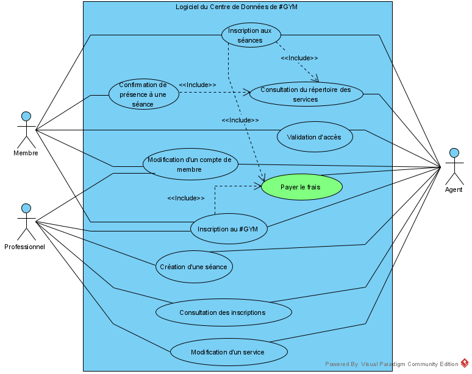

Nom: Maxime Lechasseur
Matricule: 20129433
Courriel: maxime.lechasseur@umontreal.ca
temps mis:
Nom: Qiao Wang
Matricule: 20095140
Courriel: qiao.wang@umontreal.ca
temps mis:
Nom: Han Zhang
Matricule: 20144330
Courriel: han.zhang@umontreal.ca
temps mis:
Soumissionaire : Qiao Wang
| Tâche | Maxime | Qiao | Han |
|---|---|---|---|
| Glossaire | |||
| Diagramme de cas d'utilisation | |||
| Cas d'utilisation | |||
| Risques | |||
| Exigences non-fonctionnelles | |||
| Analyse | |||
| Diagramme d'activité UML |
Services offert par #GYM:
Identifiez les différents cas d'utilisation du système à construire. Vous devez les représenter sous forme d'un diagramme de cas d'utilisation UML en utilisant l'outil Visual Paradigm (VPP). Vous serez également évalué sur l'utilisation appropriée des éléments UML. Un ordre de grandeur d'une dizaine de cas d'utilisations est attendu. 
1. L'inscription du professionnel ou du client est enregistré sur le disque.
2. La date et l'heure de l'enregistrement est inscrite dans le dossier grâce au Centre de Données.
1. Le client se présente au comptoir d'accueil.
2. Le client demande à l'agent de l'inscrire à un cours à la reception.
3. Aller au cas "Consultation Répertoire des Services".
4. Le client choisi et sélectionne une séance.
5. Aller au cas "Confirmation d'inscription de séance".
4a.1 Le client n'interesse à aucune séance.
4a.2 Le client décide de seulement accéder au #GYM.
4a.3 Passer au cas "Validation accès".
1. Le client donne son numéro de membre.
2. L'agent entre son numéro de membre.
3. Le logiciel crée un enregistrement sur le disque qui contient les champs suivants: Date et heure
actuelles,Date à laquelle le service sera fourni, Numéro du professionnel, Numéro du membre, Code du
service, Commentaires.
3a.1 Le numéro de membre est invalide.
3a.2 L'agent dit au client qu'il est suspendu.
1. L'agent ouvre le Répertoire des Services dans le menu du logiciel.
2. Le Répertoire des Services liste les séances disponible.
3. Retourne au cas "Inscription aux séances".
2a.1 L'agent demande au client le code de service.
2a.2 L'agent entre un code de service approprié à sept chiffres.
2a.3 Le Répertoire des Services liste la séance avec le code correspondant
3a. Retourne au cas "Confirmation présence à une séance"
1.
2.
3.
2a.1
2a.2
2a.3
3a.
1.
2.
3.
2a.1
2a.2
2a.3
3a.
1.
2.
3.
2a.1
2a.2
2a.3
3a.
Identifiez 5 risques potentiels du projet et classez-les par ordre de sévérité (voir la page 32 dans le module 2.1.Exigences des notes de cours)
Identifiez 5 besoins ou contraintes non-fonctionnelles du système.
un diagramme principal qui sert comme point d'entrée, ainsi que 4 autres diagrammes pour les cas d'utilisations suivants :
...
{kind=link}